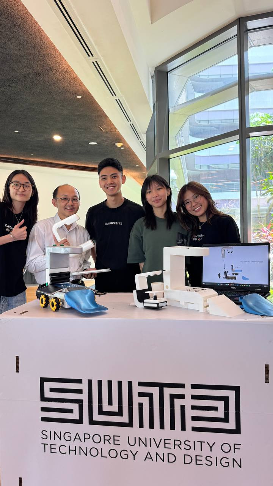
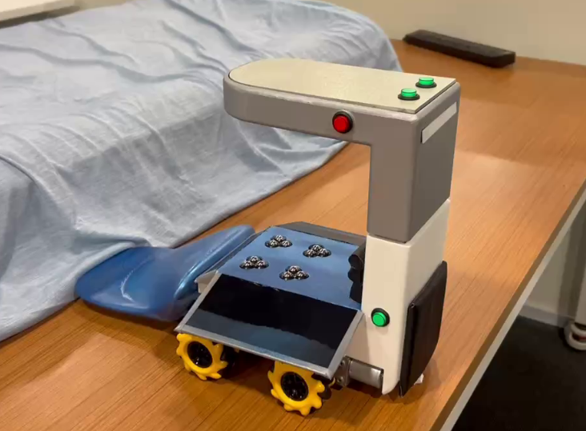
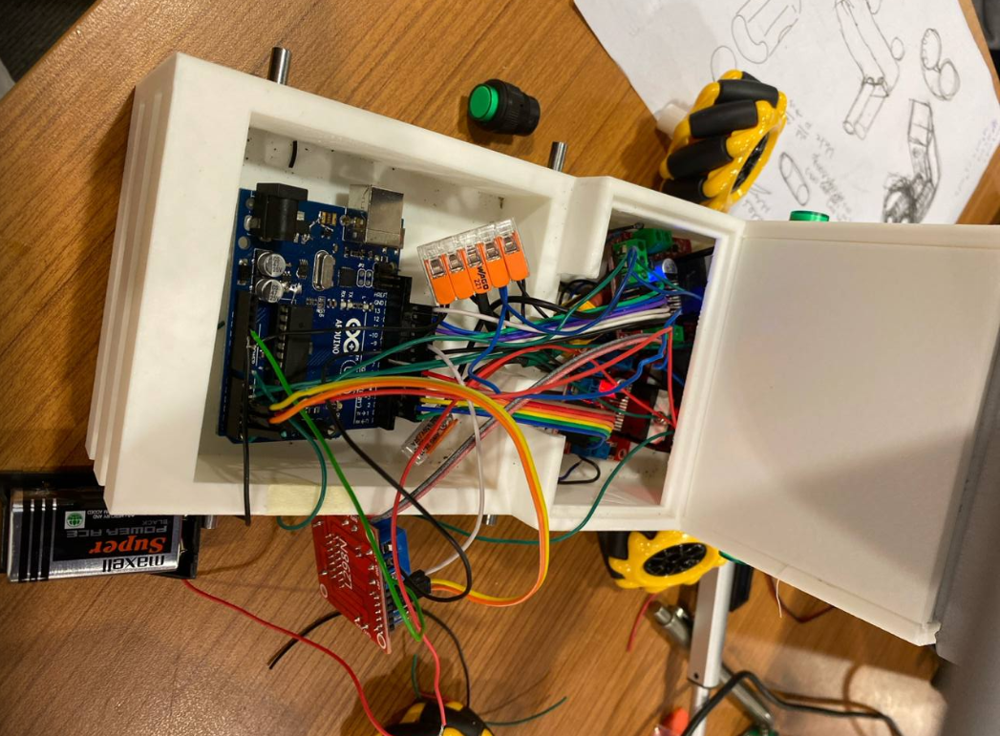

*Video editing, AI image generation (Midjourney) and AI voiceover by teammates.
Our team was tasked with addressing the difficulties of hotel bed-making, with hotel housekeepers as our key stakeholders. Through user research and collaborative data collection across groups, we identified bed tucking as the primary cause of back pain and chose to focus on assisting rather than replacing housekeepers in this process.
LIFTY is designed to slide under the mattress and tuck bedsheets autonomously at each corner. It uses mecanum wheels for tight corner navigation and ball bearings on the mattress-facing surface for smooth movement. Touch sensors on its sides detect the housekeeper's grip, allowing them to guide the device with minimal effort - eliminating the need to bend, lift, and tuck repeatedly at each angle.
The prototype uses an Arduino Uno with 3 motor drivers - 2 for the wheel pairs and 1 for the linear actuator. Directional buttons control both the side wheels and actuator height, with worm gear motors driving the wheels.


